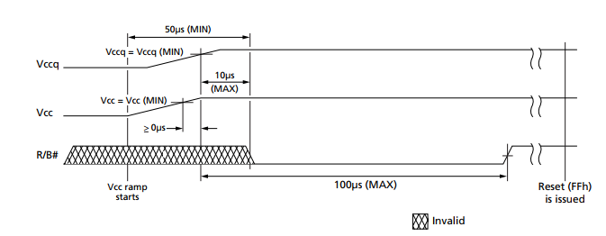

NAND flash memory is extensively used for mass storage purpose. They have found their usage in SSDs., memory cards and are also used in almost all the gadgets in todays electronic ecosystem. A number of research focused on NAND memory or flash memory in general are performed focusing primarily in using these memory for security purposes, securing data, making efficient storage strategy etc.
In this research, we present an interface to the NAND memory, specifically flash memory that is compliant to Open NAND Flash Interface (ONFI 2.3). The flash memory is interfaced to NIOS computer system. The NIOS computer system is implemented in DE1-SoC where the computer runs at 100Mhz frequency. Most of the research work presented for NAND flash memory do not reveal the interface they use or it just seems the interface frequency is a bottleneck in the system. Thus we wanted to create infrastructure for anyone interested such that they can modify the content presented here as their own need.
Technical requirments are:
The memory has to be ONFI confirmant.
The pinout should be TSOP (or make changes pin configuration).
Please verify and change the pin configuration in the code based on your hardware setting.
Although, this implemtation is based on NIOS computer in DE1-SoC system, you can pretty much use it with any microcontroller changing the value of following variables.
JUMPER_LOCATION
JUMPER_DIRECTION
All the mask values
This document presents a simulatenous discription and observation made from the code that has been written for MT29F64G08CBABA. MT29F64G08CBABA is a flash memory manufactured by Micron Inc. In addition we will make a comparison with the timings expected from the datasheet as well. Although the obesrvations presented are particular to this device, the fundamentals should be same for similar devices.
Following are some of the interesting details of this particular flash memory.
It is NAND flash memory.
It is ONFI 2.3 compliant.
It is based on MLC technology.
It has 48-Pin TSOP package.
The chip is 64 GBits
It has 4096 blocks.
It has 2 planes.
Each plane has 2048 blocks.
Each block has 256 pages. (2048K+186K bytes)
Each page is 8192 bytes. (8192 bytes+ 744 bytes)
Following are some of the information on the set-up that we are using:
The microcontroller used is NIOS-II computer system implemented on DE1-SoC.
The processor runs at 100Mhz.
The code implementation can be found at this link.
Copyright (c) 2020 Prawar Poudel
Permission is hereby granted, free of charge, to any person obtaining a copy of this software and associated documentation files (the "Software"), to deal in the Software without restriction, including without limitation the rights to use, copy, modify, merge, publish, distribute, sublicense, and/or sell copies of the Software, and to permit persons to whom the Software is furnished to do so, subject to the following conditions:
The above copyright notice and this permission notice shall be included in all copies or substantial portions of the Software.
THE SOFTWARE IS PROVIDED "AS IS", WITHOUT WARRANTY OF ANY KIND, EXPRESS OR IMPLIED, INCLUDING BUT NOT LIMITED TO THE WARRANTIES OF MERCHANTABILITY, FITNESS FOR A PARTICULAR PURPOSE AND NONINFRINGEMENT. IN NO EVENT SHALL THE AUTHORS OR COPYRIGHT HOLDERS BE LIABLE FOR ANY CLAIM, DAMAGES OR OTHER LIABILITY, WHETHER IN AN ACTION OF CONTRACT, TORT OR OTHERWISE, ARISING FROM, OUT OF OR IN CONNECTION WITH THE SOFTWARE OR THE USE OR OTHER DEALINGS IN THE SOFTWARE.
Flash Chip MT29F64G08CBABA and datasheet are property of Micron Technology, Inc.
Technical Details
NIOS computer system is a soft core processor that can be instantiated on Intel FPGA device which can be programmed into the FPGA using Intel Platform Designer program that comes integrated with Quartus. It is a complete computer system and thus a complete description of NIOS system is out of scope for this document. Any interested reader should follow the pdf document as this link.
Of the different versions of the architectures of NIOS, we are using the "fast" or NIOS II/f configuration. Since it is softcore, you can choose whatever you want to program into the FPGA fabric.
The platform that we are using is DE1-SoC system. The basic NIOS computer system for DE1-SoC system is provided by Intel under University Program. No change in the basic computer system is made as of this point.
ONFI standard defines NAND flash memory to be interfaced with parallel data lines. These data lines are 8-bit wide signals that also can be used to transfer command as well as the address.
Some of the other signals that are needed for interface are: Address Latch Enable (ALE), Command Latch Enable (CLE), Read Enable (RE), Write Enable (WE), Ready/BUSY (R/B), Chip Enable (CE) and Write Protect (WP). The signals ALE, CLE, RE#, WE# and CE# are used for asynchronous data interface while other two signals, WP# and R/B# are additional signals.
The packages can be 48-pin TSOP or 100-pin BGA for NAND flash memory. In our case the flash memory is MT29F64G08CBABA from Micron Technology which is a 48-pin TSOP flash memory. It is a MLC NAND flash memory in which each cell of flash memory can store 2-bits information.
The command and data pins are muxed together, thus it is the use of signals ALE and CLE that identifies the data being sent. For the breakdown of address:
The total address is 5 X 8 bits
First Byte CA7, CA6...CA1, CA0 and Second Byte Low, Low, CA13, CA12...CA9,CA8 where CA is the column address. (Each page has 8192 bytes+744 extra bytes)
Third Byte PA7,PA6,...PA1,PA0 where PA is the page address (Block has 256 pages)
Fourth Byte BA15, BA14... BA9,BA8 where BA is the block address
Fifth Byte Low, Low, Low, LA0, BA19, BA18, BA17 and BA16 where LA is LUN address. (There are 4096 blocks)
PA, BA abd LUN addresses are collectively called row address.
On the microcontroller side, we are using NIOS computer as our microcontroller in DE1-SoC. The parallel port of the DE1-SoC is used to interface with the flash memory. Each parallel port is 32-bit wide, thus it is sufficient to use a single parallel port for our interfacing purpose. Since all the IO are memory mapped, the address of the data is indicated by JUMPER_LOCATION in the code, while the direction register is indicated by JUMPER_DIRECTION.
Other pins that are used for our case are indicated by the mask values in the header file. Please refer to the header file before porting the code for your purpose. You may need to change the code as necessary.
Performance Analysis
In the following section we will analyze the timing characteristics of the different implemented functions in our firmware. Each of the mesurement is made by adding the timer_start() function and STOP_PRINT_CC_TAKEN macro at the beginning and at the end of the function inside the function. This should give the number of clock cycles taken by the function to execute excluding the time taken to initialize stact and jump execution to the function. Thus, this time is called InTime (Ti).
Just placing these two instrumenting codes consumes 9cc.
timer_start(); //start timer (inline function)
STOP_PRINT_CC_TAKEN; // macro that captures timer value and prints cc taken
They consume 9cc.
Another measurement is made for each of the function where the function call timer_start() is placed before the function call of the function to be measured. After the function returns, the macro STOP_PRINT_CC_TAKEN is placed. This should include the time required to setup stack, jump execution as well as the actual function operation. We call this time OutTime (To).
The instrumentation code timer_start() and STOP_PRINT_CC_TAKEN are removed from the code after their need is finished.
Some Important Observations made are as follows:
Each instruction that updates the state of a pin (interfaced to the NAND chip) on average takes 86 cc (860 ns).
Instrumenting code consumes 9cc. Thus all the time measurements presented in clock cycles should be subtracted with 9cc for accurate value.
Device Initialization function is the first function that is to be called when starting the NAND flash device. This function sets the pin direction appropriately such that only the pin R/B# is set as input for the microcontroller.
We must wait for 50 microseconds as indicated in the datasheet. This 50us should be from the start of the supply power application (ie voltage ramp).
Following diagram for device initialization is obtained from the device manual.

After waiting appropriately, we start probing the RB# signal to see if the NAND flash chip is ready. This will be indicated by a logic 1 at the RB pin which we test using a while loop.
After the RB# is high, we will send a reset signal to the device.
Measurement OutTime = 51901 cc (519010 ns when called from main function)
Measurement InTime = 51866 cc (518660 ns)
The for loop in the code designed for delay consumes 5178 cc (51780 ns = 51.7 us).
After the delay is finished, the while loop that probes the RB# signal waits for about 73 cc (730 ns)
Same data lines are used for command and data values. Thus it the function of other signals/pins to indicate the nature of the transfer.
Following is the timing diagram of the command cycle according to the manual.
The function is implemented as an inline function and it is enforced. So, the InTime should be equal to OutTime measurements. OutTime from above is 921 cc.
InTime measurement is observed at 911 cc (9110 ns)
In the implemented function, the change in pins are maintained in an order to meet the need specified in the manual.
After we load the command on the pins, we wait for 15 cc (ie 15-9 = 6 cc ie 60 ns) to allow sampling (specified time is 40 ns).
Once we disable the WE# signal, we allow it to wait for 28cc (ie 28-9 = 19cc ie 190 ns) for holding (specified time is 20 ns).
Thus sending each byte of command takes 9.1 us or 9.2 us.
Before going out of the function, we disable the CLE signal and reset all the values on the DQ pins (data lines).
Function to send address is also implemented as an inline function.
Following is the timing diagram for the address sending sequence:
Sending address needs variable number of address bytes to be sent to the NAND device. For block operation, we just need to send 3 bytes while for page operation, we need to send 5 bytes of the address data.
We condition the operation by setting the pins of NAND device as mentioned in the manual. We set CE# and CLE to low, and ALR and RE# to high.
The address bytes are loaded in a loop. We set the WE# to high and load the address byte to the pins. After each byte is loaded onto the DQ pins, we wait for same set up time as in Send Command above. We then set WE# to high, and wait for another time equal to hold time (same as in Send Command above).
After all the bytes are sent, we lower ALE pin and clear data off the DQ pins.
The InTime measured for sending 5 byte address is 2200 cc (22000 ns ie 22 us). Silimar time measured for sending 3 bytes address is 1660 cc (ie 16620 ns ie 16 us)
The OutTime measured for the above measurement made from read_page(..) function is 2278 cc (22780 ns = 22.7 us). Similar the OutTime measured for sending 3 address bytes is 1673 cc (16730 ns = 16.7 us)
The function send_data() is implemented as an inline function.
The task of this function is to copy the user data to the cache function. This data in cache function will be used by the program operation to program to specified location in NAND memory.
Since the data to be sent can vary in the number of bytes to be sent. Thus the arguments to the function are: the pointer to the data array and number of items in the array. There is no return value.
Following image shows the timing diagram of the operation:
In the function, we first set up the pins to condition for data input to NAND chip.
Then, we use a for loop to send each data byte through the pins to the NAND chip.
Making a call to send_data() with 8192 bytes ie while programming a page, the OutTime measured is 2801389 cc (28013890 ns = 28.01 ms). InTime for the same was measured to be 2774644 cc (27746440 ns = 27.75 ms)
The function get_data() is not implemented as an inline function. This function reads the data from the cache of NAND and stores in a buffer.
In the function, we first change the direction of the pins to condition them to receive data bytes. This function actually acquires the content of the cache and spits them out one byte at a time to the data pins.
Following image shows the timing diagram of the operation:
Since the number of bytes to be read depends on the use case and the need of the user, the arguments to the functions are: the pointer to the data array and the number of bytes to read.
InTime taken to get 8194 bytes takes 2134689 cc (21346890 ns = 21.35 ms). This is the time it takes by the implemented code to transfer the data from cache to the interfacing microcontroller array.
The OutTime for the same operation is measured as 2134799 cc (21347990 ns = 21.34 ms)
The same function is also used for checking status from the status register. While erase operation, the get_data() with 1 byte to read costs on average of (OutTime) 1065 cc (10650 ns = 10 us) while for page program operation, the OutTime is 917 cc (9170 ns = 9.17 us).
The datasheet mentions maximum of 50MT/s (50x10^6 transfers/seconds)
Erase Block operation is implemented as function erase_block(). The function takes an array of bytes as argument. This array should correspond the row address of the block to be erased in the form {R1,R2,R3} where R1 is the lowest address byte.
Following image shows the timing diagram of the operation:
After the address bytes are sent and the final command byte is sent to the NAND device, we wait for mandatory tWB = 200 ns.
InTime Measurement of erase block is measured as 174942 cc (1749420 ns = 1.7 ms). This is the time that includes both the methods of checking status:
wait on RB# signal
check status register
OutTime measurement of erase block is measured as 174515 cc (1745150 ns = 1.74 ms).
Program page operation is implemented in function named
In order to program a page, we need to send five byte address of the page to be programmed and 8192 bytes of the data to be programmed to the NAND flash in the sequence as shown in the figure above.
Following image shows the timing diagram of the operation:
After the address and data sequence are sent, then we must wait for a mandatory time of tWB = 200 ns.
The end of program operation is can be confirmed by checking Ready signal, and the status can be checked by reading the status register.
InTime measurement for a page program including the send_data() for 8192 bytes is 2889031 cc (28890310 ns = 28.90 ms). Time time for program operation after the last command sequence, however, is measured as 107834 cc (1078340 ns = 1.08 ms).
The datasheet mentions the program page time at 1300 us.
Read page operation to transfer data from the NAND memory to the cache is implemented in function read_page().
Following is the diagram that shows the timing nature of the operation:
Our time measurement including the time to send the command and the page address from inside the read_page() function is observed on average at 52622 cc (InTime = 526220 ns ie 526 us).
The time measured after the issuing the last command byte is 48996 cc ( 489960 ns = 490 us).
The datasheet mentions the read page time at 100us.
Code API
In the following section we will present the description of different functions that are implemented. All these functions are derived from the datasheet of the Micron NAND flash device MT29F64G08CBABA. It should be compliant of ONFI 2.2 standard.
The interval timer in NIOS computer is used for profiling time. Any user can make use of the preprocessor directives as defined below to make their own profiling. In NIOS, the interval timer can be found at address 0xff202004 and other required registers are subsequently placed.
// following are the registers in NIOS computer
// .. the base address
#define TIMER_BASE ((uint32_t*) 0xff202000)
// .. the control register
#define TIMER_CONTROL ((uint32_t*) 0xff202004)
// .. timer counter low (only 16-bits)
#define TIMER_COUNTER_LOW ((uint32_t*) 0xff202008)
// .. timer counter high (only 16-bits)
#define TIMER_COUNTER_HIGH ((uint32_t*) 0xff20200C)
// .. timer counter snapshot low (only 16-bits)
#define TIMER_COUNTER_SNAP_LOW ((uint32_t*) 0xff202010)
// .. timer counter snapshot high (only 16-bits)
#define TIMER_COUNTER_SNAP_HIGH ((uint32_t*) 0xff202014)
// .. instead of making call to timer_diff(), use the following statement
#define PRINT_CC_TAKEN printf(".. the last operation took %lu cc.\n",timer_diff())
#define STOP_PRINT_CC_TAKEN {\
uint32_t clock_count = timer_diff();\
printf(".. the last operation took %lu cc.\n",clock_count);\
}
// function timer_start()
// .. following function starts the timer in downwards direction
// .. that means we will have max values in the counter and count downwards
FORCE_INLINE inline void timer_start()
{
*TIMER_COUNTER_LOW = 0xffff;
*TIMER_COUNTER_HIGH = 0xffff;
// .. bit 0: interupt enable, bit 1: continuous mode, bit 2:start counting
*TIMER_CONTROL = 0x006; //0b0110
}
// function timer_end()
// .. following function takes the snapshot from the counter and puts them in snap register
// .. do not make a call to this function from user code, see timer_diff instead
FORCE_INLINE inline void timer_end()
{
// grab the snap shot value
// .. to catch the snapshot value, just write anything to the snap register
*TIMER_COUNTER_SNAP_LOW = 1;
// now we can stop the timer
// .. bit 3 is STOP
*TIMER_CONTROL = 0x08;
}
// function timer_diff
// .. this function gives out the time in nanoseconds as measured by the timer
FORCE_INLINE inline uint32_t timer_diff()
{
// first stop the timer
timer_end();
// the initial value that we started was 0xff ff ff ff ff
uint32_t clock_count = 0xffffffff-((*TIMER_COUNTER_SNAP_HIGH)*65536+(*TIMER_COUNTER_SNAP_LOW)); // in cc
return clock_count;
}
An example of the code snippet that measures the time taken by erase operation is shown below:
// The computer system used here is DE1_SoC that runs at 100Mhz (10 ns period)
// connection to the NAND is made in parallel port 1 on JP1
// .. the address of which is at 0xff200060
// .. so here we will create masks for the data to be read/written
#define JUMPER_LOCATION ((uint32_t*) 0xff200060)
// value 1 in direction register means output
// .. 0 means input
// .. following is just the address of the register
#define JUMPER_DIRECTION ((uint32_t*) 0xff200064)
#define PUSH_KEY_LOCATION ((uint32_t*) 0xff200050)
#define DQ_mask (0x000000ff) //connected at D7D6..D0
#define WP_shift 8
#define WP_mask (0x1<<WP_shift) // connected at D8
#define CLE_shift 11
#define CLE_mask (0x1<<CLE_shift) // connected at D11
#define ALE_shift 10
#define ALE_mask (0x1<<ALE_shift) //connected at D10
#define RE_shift 13
#define RE_mask (0x1<<RE_shift) // connected at D13
#define WE_shift 9
#define WE_mask (0x1<<WE_shift) // connected at D9
#define CE_shift 12
#define CE_mask (0x1<<CE_shift) // connected at D12
#define RB_shift 14
#define RB_mask (0x1<<RB_shift) // connected to D14
#define SAMPLE_TIME asm("nop");asm("nop")
#define HOLD_TIME {asm("nop");}
// 100ns
#define tWW asm("nop");asm("nop");asm("nop");asm("nop");asm("nop");asm("nop");asm("nop");asm("nop");asm("nop");asm("nop")
#define tWB {asm("nop"); asm("nop");}
#define tRR {for(uint8_t i=0;i<4;i++) asm("nop");}
#define tRHW tWB
#define tCCS tWB
#define tADL tWB
#define tWHR {for(uint8_t i=0;i<12;i++) asm("nop");} // .. tWHR = 120ns
// function to send an arbitrary command signal to the NAND device
// .. the procedure is as follows ( in the sequence )
FORCE_INLINE inline void send_command(uint8_t command_to_send)
{
// .. Write Enable should go low WE => low
// .. reset the bit that is connected to WE
*jumper_address &= ~(WE_mask);
// .. .. Chip Enable should go low CE => low
*jumper_address &= ~(CE_mask);
// .. .. ALE should go low ALE => low
// .. .. ALE should be zero from before
// .. ..RE goes high
// .. ..RE should be high from before
// .. .. CLE should go high CLE => high
*jumper_address |= (CLE_mask);
// .. .. send the command signal in the DQ pins
// .. .. the idea is clear the least 8-bits
// .. .. copy the values to be sent
// .. .. ..the first part reset the DQ pins
// .. .. ..the second part has the actual command to send
*jumper_address = (*jumper_address&(~DQ_mask))|(command_to_send & DQ_mask);
//insert delay here
// .. tDS = 40 ns
SAMPLE_TIME;
// disable write enable again
*jumper_address |= (WE_mask);
//insert delay here
// .. because the command is written on the rising edge of WE
// tDH = 20 ns
// HOLD_TIME;
asm("nop");
// disable CLE
*jumper_address &= ~(CLE_mask);
//make sure to call set_default_pin_values()
set_default_pin_values();
}
// function to send address to the NAND device
// .. the procedure is as follows (in the sequence)
FORCE_INLINE inline void send_addresses(uint8_t* address_to_send, uint8_t num_address_bytes)
{
#if DEBUG
printf("Sending Address: ");
#endif
// .. .. CE goes low
*jumper_address &= ~CE_mask;
// .. CLE goes low
// .. CLE should be 0 from before
// .. ALE goes high
*jumper_address |= ALE_mask;
// .. RE goes high
// .. RE should be high from before
for(uint8_t i=0;i<num_address_bytes;i++)
{
*jumper_address &= ~(WE_mask);
// .. Put data on the DQ pin
// .. .. the idea is clear the least 8-bits
// .. .. copy the values to be sent
*jumper_address = (*jumper_address&(~DQ_mask))|(address_to_send[i] & DQ_mask);
#if DEBUG
printf("0x%x,", (uint8_t)*jumper_address&0xff);
#endif
//.. a simple delay
SAMPLE_TIME; //tDS
// .. Address is loaded from DQ on rising edge of WE
*jumper_address |= WE_mask;
// .. maintain WE high for certain duration and make it low
// .. put next address bits on DQ and cause rising edge of WE
// .. address expected is 5-bytes ColAdd1, ColAdd2, RowAdd1, RowAdd2, RowAdd3
//insert delay here
asm("nop"); // tDH
}
//make sure to call set_default_pin_values()
set_default_pin_values();
#if DEBUG
printf("\n");
#endif
}
// function to send data from the host machine to the NAND flash
// .. Data is written from DQ[7:0] to the cache register of the selected die (LUN)
// .. .. on the rising edge of WE# when CE# is LOW, ALE is LOW, CLE is LOW, and RE# is HIGH
FORCE_INLINE inline void send_data(uint8_t* data_to_send,uint16_t num_data)
{
// .. CE should be low
*jumper_address &= ~CE_mask;
for(uint16_t i=0;i<num_data;i++)
{
// .. make WE low and repeat the procedure again for number of bytes required (int num_data)
*jumper_address &= ~WE_mask;
// .. put data on DQ and latch WE high for certain duration
// .. .. the idea is clear the least 8-bits
// .. .. copy the values to be sent
*jumper_address = (*jumper_address&(~DQ_mask))|(data_to_send[i] & DQ_mask);
//.. a simple delay
SAMPLE_TIME; // tDS
*jumper_address |= WE_mask;
//insert delay here
// HOLD_TIME; //tDH
asm("nop");
// reset all the data on DQ pins
// .. this might be unnecesary
*jumper_address &= ~(DQ_mask);
}
//make sure to call set_default_pin_values()
set_default_pin_values();
}
// function to receive data from the NAND device
// .. data is output from the cache regsiter of selected die
// .. it is supported following a read operation of NAND array
void get_data(uint8_t* data_received,uint16_t num_data)
{
set_datalines_direction_input();
// .. data can be received when on ready state (RDY signal)
// .. ensure RDY is high
// .. .. just keep spinning here checking for ready signal
while((*jumper_address & RB_mask)== 0x00);
// .. data can be received following READ operation
// .. the procedure should be as follows
// .. .. CE should be low
*jumper_address &= ~CE_mask;
// .. make WE high
// .. .. WE should be high from before
// .. .. ALE and CLE should be low
// .. .. they should be low from before
for(uint16_t i=0;i<num_data;i++)
{
// set the RE to low for next cycle
*jumper_address &= ~RE_mask;
// tREA = 40ns
SAMPLE_TIME;
// read the data
data_received[i] = *jumper_address & DQ_mask;
// .. data is available at DQ pins on the rising edge of RE pin (RE is also input to NAND)
*jumper_address |= RE_mask;
// tREH
asm("nop"); // same same
}
// set the pins as output
set_datalines_direction_default();
//make sure to call set_default_pin_values()
set_default_pin_values();
}
// function to disable Program and Erase operation
// .. when WP is low, program and erase operation are disabled
// .. when WP is high, program and erase operation are enabled
void write_protect()
{
// check to see if the device is busy
// .. wait if busy
while((*jumper_address&RB_mask)==0x00);
// wp to low
*jumper_address &= ~WP_mask;
//insert delay here
for(uint8_t i=0;i<4;i++);
}
void write_enable()
{
// check to see if the device is busy
// .. wait if busy
while((*jumper_address&RB_mask)==0x00);
// wp to high
*jumper_address |= WP_mask;
//insert delay here
tWW;
}
// function to initialize the NAND device
// .. following are the tasks to be performed for initialization of NAND device
// .. provide Vcc (ie ramp Vcc)
// .. host must wait for R/B to be valid (R/B should be low for certain duration and be high
// .. .. to indicate device is ready) R/B is output from the NAND device
// .. issue 0xFF command after R/B goes high (Reset is the first command to be issued)
// .. R/B should be monotired again after issuing 0XFF command
void device_initialization()
{
set_pin_direction_inactive();
set_default_pin_values();
//insert delay here
for(uint16_t i=0;i<90;i++); //50 us max
// wait for R/B signal to go high
while((*jumper_address & RB_mask)==0);
// now issue RESET command
reset_device();
}
// function to reset the whole device
// .. issue a command 0xFF for reset operation
// .. following operations should be performed for this
// .. .. enable command cycle
// .. .. command to be sent is 0xFF
// .. .. check for R/B signal to be high after certain duration (should go low(busy) and go high (ready))
void reset_device()
{
// oxff is reset command
send_command(0xff);
// no address is expected for reset command
// wait for busy signal again
//insert delay here
// .. not needed because the next polling statement will take care
// .. polling the Ready/BUSY signal
// .. but we should wait for tWB = 200ns before the RB signal is valid
tWB; // tWB = 200ns
while((*jumper_address & RB_mask)==0);
}
// following function will reset just a particular LUN
// .. a LUN or logical unit is also called a NAND flash die (our NAND has 2 planes in a die)
// .. can be used to put the LUN into a known state or abort commadn sequences going on
// .. .. all the cache contents are invalid
// .. .. if any operation is going on, partial operations might take place
// .. .. the command issuing has to be followed by sequence of (3-byte) address of the LUN
void reset_LUN(uint8_t* address_LUN, uint8_t num_address_bytes)
{
// 0xfa is the reset LUN command
send_command(0xfa);
// send the address of the LUN to reset
send_addresses(address_LUN,num_address_bytes);
//insert delay here
tWB;//tWB
while((*jumper_address & RB_mask)==0);
}
// function to read the device ID
// when read from address 00h, it returns 8-byte ID of which first 5-bytes are manufacturer ID
// follow the following sequences
// .. set command cycle
// .. .. send 90h as command
// .. set address sending mode
// .. ..send 00 as address
// .. wait for tWHR duration
// .. read 8-bytes from the DQ pins
void read_manufacturer_id(uint8_t* device_id_array)
{
// make sure none of the LUNs are busy
while((*jumper_address & RB_mask)==0);
// read ID command
send_command(0x90);
// send address 00
send_address(0x00);
// wait for tWHR duration
//insert delay here
// .. tWHR = 120ns
tWHR;
get_data(device_id_array,8);
#if DEBUG
printf("After reading from the device, manufacturer ID is:\n");
print_array(device_id_array,8);
#endif
}
// function that reads the device ID and tries to detect the device name
// .. call the function device_id at address 00h
// .. lookup table based finding for device name
// .. this function is not decisive
void detect_device()
{
// create a 8-byte variable
// .. static array
uint8_t my_device_id[8];
// following call should return the device ID to the array
read_device_id_00(my_device_id);
char device_name[20] = "?";
// now check each bytes
if(my_device_id[0]==0x2c)
{
if(my_device_id[1]==0x88)
{
if(my_device_id[2]==0x04)
{
if(my_device_id[3]==0x4b)
{
if(my_device_id[4]==0xa9)
{
strcpy(device_name,"MT29FxxxG08Cxxxx\0");
}
}
}
}else if(my_device_id[1]==0xA8)
{
if(my_device_id[2]==0x05)
{
if(my_device_id[3]==0x5b)
{
if(my_device_id[4]==0xa9)
{
strcpy(device_name,"MT29FxxxG08Cxxxx\0");
}
}
}
}else if(my_device_id[1]==0x64)
{
if(my_device_id[2]==0x44)
{
if(my_device_id[3]==0x4b)
{
if(my_device_id[4]==0xa9)
{
strcpy(device_name,"MT29F64G08CBABA\0");
}
}
}
}
}
if(device_name[0]=='?')
{
printf("Device Family Not Recognized\n");
}else
{
printf("Detected Device ID is %s\n", device_name);
}
}
// function to read the 4-byte ONFI code
// when read from address 00h, it returns 4-byte ONFI code
// follow the following sequences
// .. set command cycle
// .. .. send 90h as command
// .. set address sending mode
// .. ..send 20 as address
// .. wait for tWHR duration
// .. read 4-bytes from the DQ pins
void read_ONFI_id(uint8_t* device_id_array)
{
// make sure none of the LUNs are busy
while((*jumper_address & RB_mask)==0);
// read ID command
send_command(0x90);
// send address 00
send_address(0x20);
// wait for tWHR duration
// .. tWHR = 120ns
tWHR;
get_data(device_id_array,4);
#if DEBUG
printf("After reading from the device, ONFI ID is:\n");
print_array(device_id_array,4);
#endif
}
void read_JEDEC_id(uint8_t* device_id_array)
{
// make sure none of the LUNs are busy
while((*jumper_address & RB_mask)==0);
// read ID command
send_command(0x90);
// send address 00
send_address(0x40);
// wait for tWHR duration
// .. tWHR = 120ns
tWHR;
get_data(device_id_array,5);
#if DEBUG
printf("After reading from the device, JEDEC ID is:\n");
print_array(device_id_array,5);
#endif
}
// function to read the unique identifier programmed into the target
// .. only accepted when device is not busy
// .. start a command cycle with 0x70 as command
// .. start a address cycle of 0x00 as address
// .. target is busy for tR , can be tested using R/B# signal begin high to indicate if the device is ready
// .. one data byte is output per RE# toggle at DQ pin
// .. .. 32 bytes of data is received
// .. .. .. first 16 bytes is the unique ID and next 16-bytes is complement of the data
// .. .. .. XOR should be done to ensure correctness
void read_unique_id(uint8_t* device_id_array, uint8_t num_data)
{
// make sure none of the LUNs are busy
while((*jumper_address & RB_mask)==0);
// command for read unique ID
send_command(0xed);
// address, lets send 00
send_address(0x00);
//insert delay here
// ..tWB = 200ns
tWB;
// make sure none of the LUNs are busy
while((*jumper_address & RB_mask)==0);
// read from different address
// change_read_column();
uint8_t* data_temp = (uint8_t*)malloc(32*sizeof(uint8_t));
tRR;
#if DEBUG
printf("Before reading from the device\n");
print_array(data_temp,32);
#endif
get_data(data_temp,32);
#if DEBUG
printf("After reading from the device\n");
print_array(data_temp,32);
#endif
// now check the validity of the data
for(uint8_t i=0;i<16;i++)
{
if((data_temp[i]^data_temp[16+i]) != 0xff)
{
printf("Error in reading the unique device ID\n");
break;
}
}
for(uint8_t i=0;i<num_data;i++)
{
device_id_array[i] = data_temp[i];
}
free(data_temp);
}
// following function can be used to read the status following any command
void read_status(uint8_t* status_value)
{
send_command(0x70);
//insert delay here
// .. tWHR= 120ns
tWHR;
get_data(status_value,1);
}
// use this for multi-LUN device to avoid bus contention
// .. r1, r2 and r3 are the three-bytes for the row addresss
void read_status_enhanced(uint8_t* status_value, uint8_t* r1r2r3)
{
send_command(0x78);
send_addresses(r1r2r3,3);
//insert delay here
//insert delay here
// .. tWHR= 120ns
tWHR;
get_data(status_value,1);
}
// just a normal function to print an array to terminal
void print_array(uint8_t* my_array, uint16_t len)
{
for(uint16_t i=0;i<len;i++)
{
printf("0x%x ", my_array[i]);
}
printf("\n");
}
// follow the following function call by get_data() function call
// .. please change this if the device has multiple dies
void change_read_column(uint8_t* col_address)
{
tRHW; // tRHW = 200ns
send_command(0x05);
send_addresses(col_address,2);
send_command(0xe0);
tCCS; //tCCS = 200ns
}
// follow the following function call by get_data() function call
void change_read_column_enhanced(uint8_t* address)
{
tRHW; // tRHW = 200ns
send_command(0x06);
send_addresses(address,5);
send_command(0xe0);
tCCS; //tCCS = 200ns
}
// following function call should be followed by send_data() function calls
// .. this just changes the address in the selected cache register
void change_write_column(uint8_t* col_address)
{
send_command(0x85);
send_addresses(col_address,2);
tCCS; //tCCS = 200ns
}
// change teh row address where the cache register contents will be programmed in NAND flash
// .. row address means block and page address
// .. data input is optional after the address cycles
// .. .. data input begins at the column address specified
void change_row_address(uint8_t* address)
{
send_command(0x85);
send_addresses(address,5);
// .. wait before inputting the data
tCCS; //tCCS = 200ns
}
// write a function to perform an read operation from NAND flash to cache register
// .. reads one page from the NAND to the cache register
// .. during the read, you can use change_read_column and change_row_address
void read_page(uint8_t* address,uint8_t address_length)
{
// make sure none of the LUNs are busy
while((*jumper_address & RB_mask)==0);
send_command(0x00);
send_addresses(address,address_length);
send_command(0x30);
// just a delay
tWB;
// check for RDY signal
while((*jumper_address & RB_mask)==0);
// tRR = 40ns
tRR;
}
// following is the faster read operation
// .. essentially calls the read_page function above
// .. and reads the output data from the cache and at the same time copies next page to the data regsiter
void read_page_cache_sequential(uint8_t* address, uint8_t address_length,uint8_t* data_read,uint16_t* data_read_len,uint16_t num_pages)
{
// make sure none of the LUNs are busy
while((*jumper_address & RB_mask)==0);
send_command(0x00);
send_addresses(address,address_length);
send_command(0x30);
// just a delay
tWB;
// check if it is out of Busy cycle
while((*jumper_address & RB_mask)==0);
// lets wait again
tRR;
for(uint16_t page_num = 0;page_num<num_pages-1;page_num++)
{
send_command(0x31);
// just a delay
tWB;
// check if it is out of Busy cycle
while((*jumper_address & RB_mask)==0);
// lets wait again
tRR;
*data_read_len = 8192;
get_data(data_read+(page_num*(*data_read_len)),*data_read_len);
}
// read page cache last
send_command(0x3f);
// just a delay
tWB;
// check if it is out of Busy cycle
while((*jumper_address & RB_mask)==0);
// lets wait again
tRR;
*data_read_len = 8192;
get_data(data_read+((num_pages-1)*(*data_read_len)),*data_read_len);
}
// enables data output for the last selected die and cache register
// .. after a READ operation has been monitored
void read_mode()
{
send_command(0x00);
}
// program operation is used to move data from cache or data regsiter to NAND array
// .. during program operation, the contents of cache or data registers are modified by internal control logic
// .. pages in a block should be programmed from the least significant page to the most sign addres
// .. programming pages out of order in a block is not allowed
// .. address: should be 5 bytes and data should be
void program_page(uint8_t* address,uint8_t* data,uint16_t num_data)
{
//
send_command(0x80);
send_addresses(address,5);
// tADL
tADL;
send_data(data,num_data);
send_command(0x10);
tWB;
#if DEBUG
printf("Inside program Fn: Address is: ");
print_array(address,5);
#endif
// check if it is out of Busy cycle
while((*jumper_address & RB_mask)==0);
uint8_t status_value;
// .. use the commended code for multi-plane die
// read_status_enhanced(&status_value,(address+2));
read_status(&status_value);
if(status_value&0x01)
{
printf("Failed Program Operation\n");
}else
{
#if DEBUG
printf("Program Operation Successful\n");
#endif
}
}
// function used to program multiple pages
// the data is copied to the cache, and then to the NAND memory
// .. there is no need to wait for the previous operation to complete
// .. and can move on with next program operation of page
// address is an array with multiple of 5, each representing the address of each page
// data is same programmed to each page
// num_data is the number of bytes of data in data array
void program_page_cache(uint8_t* address,uint8_t* data,uint16_t num_data,uint8_t num_pages)
{
for(uint8_t page_num = 0;page_num<num_pages-1;page_num++)
{
send_command(0x80);
send_addresses(address+(5*page_num),5);
// tADL
tADL;
send_data(data,num_data);
send_command(0x15);
tWB;
// check if it is out of Busy cycle
while((*jumper_address & RB_mask)==0);
}
send_command(0x80);
send_addresses((address+5*(num_pages-1)),5);
// tADL
tADL;
send_data(data,num_data);
send_command(0x10);
tWB;
// check if it is out of Busy cycle
while((*jumper_address & RB_mask)==0);
uint8_t status_value;
// .. use the commended code for multi-plane die
// read_status_enhanced(&status_value,(address+2));
read_status(&status_value);
if(status_value&0x01)
{
printf("Failed Program Operation\n");
}else
{
#if DEBUG
printf("Program Operation Successful\n");
#endif
}
}
void erase_block(uint8_t* row_address)
{
*jumper_direction &= ~RB_mask;
// check if it is out of Busy cycle
while((*jumper_address & RB_mask)==0);
send_command(0x60);
send_addresses(row_address,3);
send_command(0xd0);
tWB;
#if DEBUG
printf("Inside Erase Fn: Address is: ");
print_array(row_address,3);
#endif
// check if it is out of Busy cycle
while((*jumper_address & RB_mask)==0);
// let us read the status register value
uint8_t status;
read_status(&status);
if(status&0x01)
{
printf("Failed Erase Operation\n");
}else
{
#if DEBUG
printf("Erase Operation Successful\n");
#endif
}
}